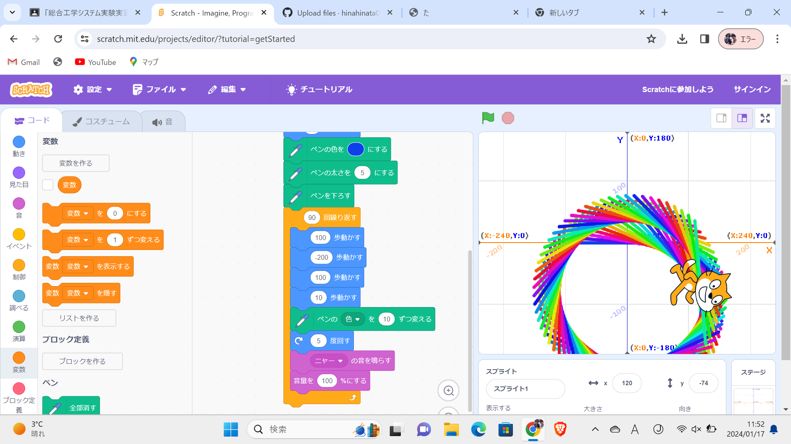
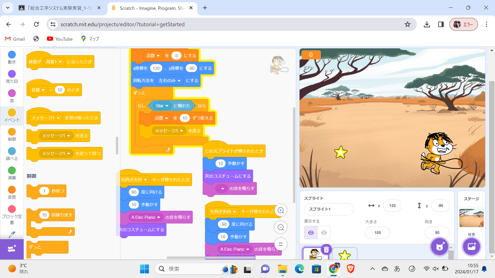

1-1 サイエンスアート

1.内容
旗マークが押されたとき今までに書かれた絵をすべて削除し，x,y座標を0,0にして，90度に傾ける．ぺンの色を青，太さを５にし，ペンを下す．
(100,-200,100,10歩，色を10ずつ変えて5度回し，ニャーと音を出して，音量を100パーセントにする)を90回繰り返す．プログラム．
2.感想
数値を10変えたり，色を少しずつ変わるように設定したり，角度を少し変えただけで書かれる絵が全然違うものになって少しの誤差でも結果が全然違うものになるんだと分かって面白かった．
1-2 ゲーム

1.内容
まず，スプライトが押されたとき10歩動かし，ニャーと音を鳴らし，コスチュームを変えるようにする．次に旗が押されたとき，点数をゼロにし回転方法を左右の身にしてx座標を－120にし，y座標を－90にし，｛もしリンゴに触れたなら点数を10ずつ変えるようにメッセージ1をおくる｝をずっと繰り返すようにする．次に右矢印が押されたとき90度に向け，10歩動かしニャーと鳴らしコスチュームを変える．また左矢印が押されたとき，－90度に向けて10歩動かしコスチュームを変える．
最後に旗マークが押されたときリンゴの大きさを75％にし，｛リンゴを表示し，x座標を－200から200までの乱数，y座標を180にし，そこから1から4秒でx座標をx座標に，y座標を－180変える｝をずっと繰り返すプログラム．
2.感想
普段からゲームの中のキャラクターがなんでこのボタンを押したら動くのかなと疑問に思っていたので自分でプログラミングして簡単にだけど
理屈を理解することができて気持ち良かった．プログラムするためのプログラムはどのようにしてできたのか気になった.